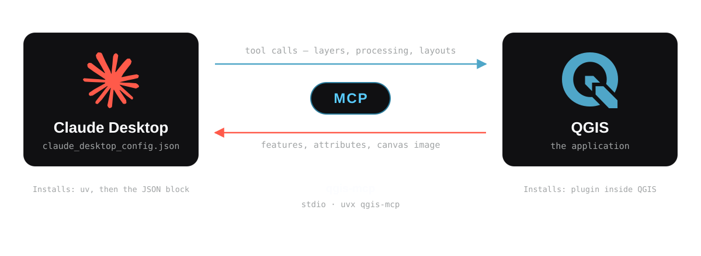

Connect QGIS to Claude
A working QGIS MCP setup using uvx, with the exact config we run, what Claude can then do to a project, and why you should keep a checkpoint before you let it.

This is the setup we run in the studio. The config below is the one in our own claude_desktop_config.json, with personal paths generalised.
If you have not set up an MCP server before, read What MCP actually is first — it covers where the config file lives and the three mistakes that account for most failures.
What you get
Once connected, Claude can work with a running QGIS instance: list and add layers, inspect CRS and extents, run Processing algorithms, read and edit attributes, build layouts, and export. It is a genuine two-way connection, not a file converter.
That cuts both ways. It can also edit your layers. See Before you let it loose.
What you need
- QGIS, installed and running.
uv— the Python toolchain from Astral that providesuvx.uvxruns a Python tool without you installing it into an environment first, which is what makes this config a single line.- The QGIS MCP server. We use the one at
github.com/nkarasiak/qgis-mcp, run directly from its archive.
Install uv from the official instructions at docs.astral.sh/uv. Afterwards, check it resolves:
uvx --versionNote where it lives — on Windows it commonly lands in C:\Users\<you>\.local\bin\uvx.exe. You may need the full path in the config if that directory is not on Claude's PATH.
Claude Desktop
Open %APPDATA%\Claude\claude_desktop_config.json and add:
{
"mcpServers": {
"qgis": {
"command": "uvx",
"args": [
"--from",
"https://github.com/nkarasiak/qgis-mcp/archive/refs/heads/main.zip",
"qgis-mcp-server"
]
}
}
}If Claude cannot find uvx, replace "uvx" with its absolute path, using forward slashes:
"command": "C:/Users/<you>/.local/bin/uvx.exe"Quit Claude Desktop completely and reopen it. On Windows, check the system tray — closing the window is not enough.
Claude Code
claude mcp add qgis -- uvx --from https://github.com/nkarasiak/qgis-mcp/archive/refs/heads/main.zip qgis-mcp-serverThen:
claude mcp listA note on pulling from a branch archive
That URL points at the main branch archive, so every time the server starts you get whatever is on main at that moment. It is convenient and it is not reproducible.
If you want the behaviour to stay still, point --from at a tagged release or a specific commit archive instead, and note which one you pinned. On a project where the GIS work matters, pin it.
Checking it worked
Start QGIS, open a project, then ask Claude:
What layers are in my QGIS project, and what CRS is each one in?
If the connection is live you get an answer about your actual project. If you get a general explanation of what layers are, the server did not connect — see the troubleshooting section of the MCP primer.
Before you let it loose
This server can modify your project. Layers can be added, fields calculated, features edited, styles changed.
Three habits worth forming:
- Create a checkpoint first. The server exposes checkpoint and restore operations — use them at the start of a session, not after something goes wrong.
- Work on a copy of the project file for anything exploratory.
- Watch the CRS. The quickest way to produce confident nonsense is to let a layer land in the wrong projection and carry on. Ask for the CRS of everything before you ask for analysis, and check that answer yourself.
That third one is not hypothetical. A reprojection performed on an assumed source CRS produces output that carries a confident declaration and is wrong in a way nobody can later unpick. If your datasets disagree about what frame they are in, resolve that before you automate anything on top of them — our CRS & Georeferencing Check skill exists for exactly that problem.
What it is good at
- Reading a project and telling you what is actually in it — layer list, CRS per layer, extents, feature counts, field names. This is the single most useful thing it does and it is entirely read-only.
- Running Processing algorithms without you remembering the parameter names.
- Attribute work — field calculator expressions, joins, statistics.
- Layouts — adding maps, legends, scale bars and labels, then exporting.
What to keep away from it
- Anything you have not backed up.
- Deciding a CRS. It can read what a layer declares. It cannot tell you what a layer that declares nothing ought to be, and neither can anyone else without asking the supplier.
- Interpreting the result. It will run a buffer and a zonal statistic happily. Whether the answer means anything is still yours.